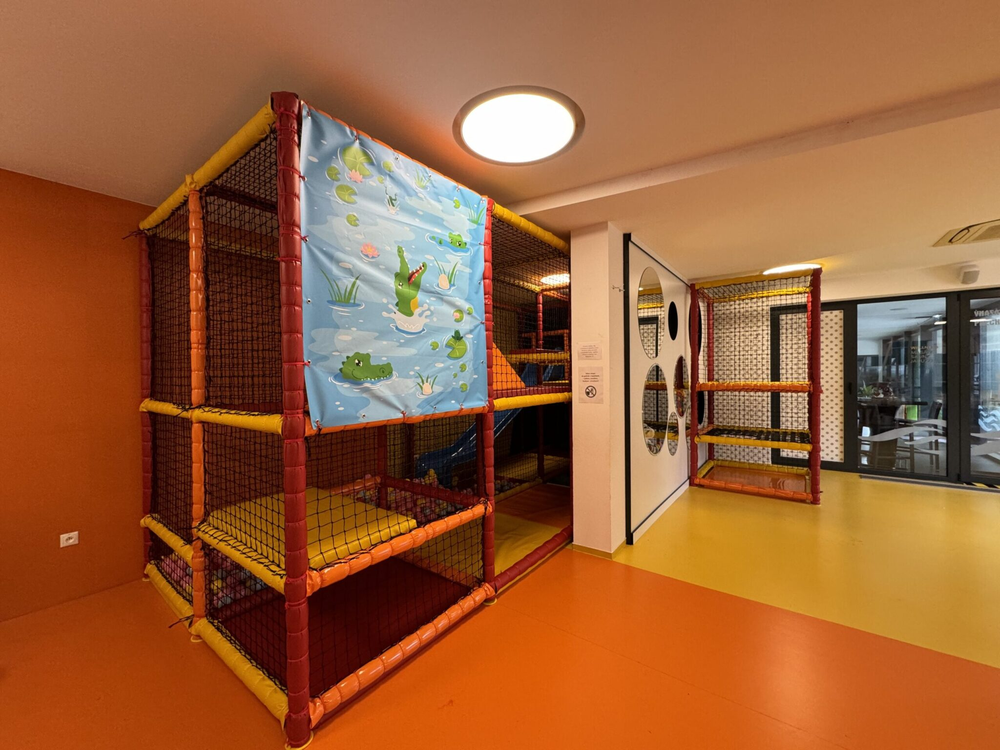

Interiérové ihriská na mieru
Ihrisko, ktoré vyrastie z vášho priestoru
Pozrite si, ako ihrisko skladáme krok za krokom. Každé navrhujeme podľa miestnosti, výšky stropu a veku detí.
Interiérové ihriská na mieru
Pozrite si, ako ihrisko skladáme krok za krokom. Každé navrhujeme podľa miestnosti, výšky stropu a veku detí.
Dodanie a montáž na kľúč
Navrhneme, dodáme a zmontujeme. Ozvite sa nám a povieme vám, čo sa dá spraviť vo vašom priestore.
01.1
Hladký lesklý povrch miestnosti. Ihrisko stojí priamo na ňom.
01.2
Oranžová pod ihriskom, žltá pri okne, fialová pri vstupe.
01.3
Povrch bez škár sa ľahko čistí.
02.1
Mäkké panely pokrývajú celé prízemie ihriska.
02.2
Leží v jednej bunke a drží tvar aj pri záťaži.
02.3
Panely tlmia pády detí na prízemí.
03.1
Šesť hlavných stĺpov a dva ďalšie pod poschodím.
03.2
Priemer okolo 12 cm, výška 2,4 m.
03.3
Mäkké segmenty na stĺpoch tlmia nárazy.
04.1
Spájajú stĺpy vo výške poschodia (1,2 m) a hore (2,4 m).
04.2
Pevne spájajú trubky so stĺpmi.
04.3
Žltý a oranžový mäkký vinyl kryje všetky trubky.
05.1
Plocha asi 1,2 x 1,5 m s tmavým dnom.
05.2
Plastové, v ružovej, žltej a bielej farbe.
05.3
Vypolstrovaný, chráni pri vstupe aj výstupe.
06.1
Červený vinyl vo výške 1,2 m.
06.2
Dve žlté, vysoké asi 0,7 m, bez ostrých hrán.
06.3
Nízka lavica a mäkké valce na lezenie.
07.1
Začína na poschodí vo výške 1,2 m.
07.2
Modrý plast s bočnými stenami, dĺžka asi 2 m.
07.3
Končí v guľôčkovom bazéne, ktorý tlmí dopad.
08.1
Stupne zo strany vedú z prízemia na poschodie.
08.2
Dlhý asi 0,9 m, so sieťovou podlahou.
08.3
Hore rebríkom, cez tunel, dole šmykľavkou.
09.1
Priemer asi 0,6 m, v bielej stene vedľa ihriska.
09.2
Cez otvory sa dá preliezť aj pozerať von.
09.3
Menšia samostatná veža s tromi úrovňami.
10.1
Oká asi 5 x 5 cm.
10.2
Siete obopínajú všetky štyri strany.
10.3
Deti zostanú vnútri a rodičia ich vidia.
11.1
Čierna sieť uzatvára ihrisko zhora.
11.2
Žlté mäkké ráfiky lemujú sieť.
11.3
Žltý panel prekrýva časť stropu.
12.1
Potlač s krokodílom a leknami na prednej stene.
12.2
Motív plachty sa dá prispôsobiť prevádzke.
12.3
Zvislé stĺpy a čierne kruhové stupne na pohyb.

Realizácia Šamorín
Ihrisko na mieru prepojené s existujúcou stenou s otvormi. Podľa neho sme postavili model vyššie.
Pozrieť projekt
Vyše 180 projektov
Na Slovensku, v Česku, vo Francúzsku a v Taliansku. Od herne po aquapark.
Realizované projekty